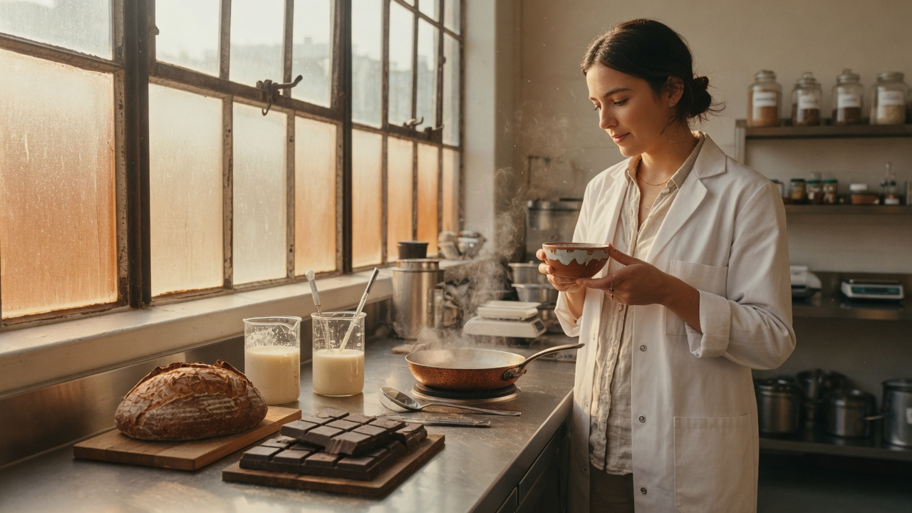
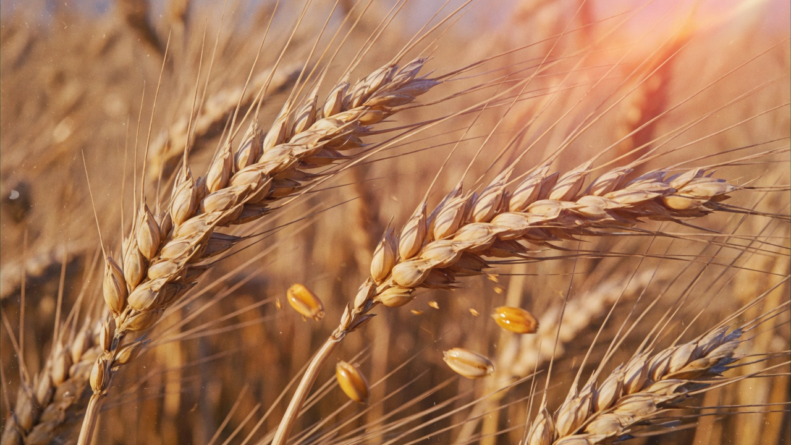
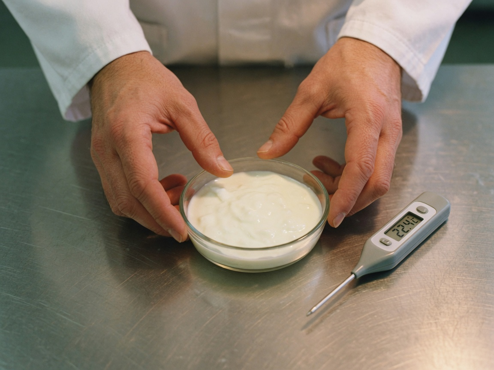
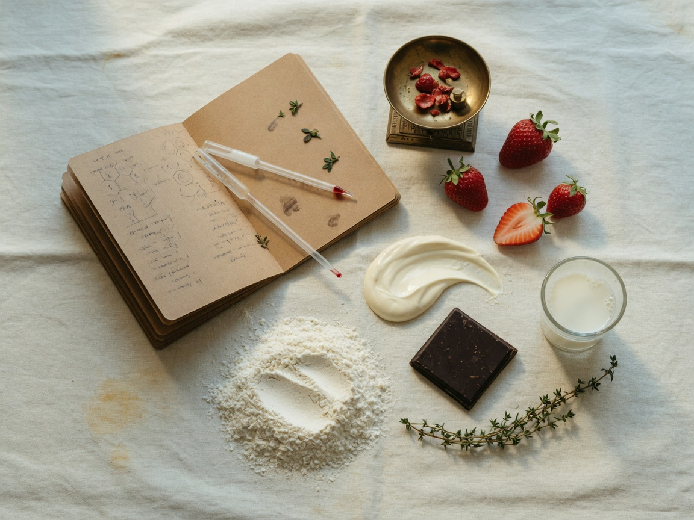
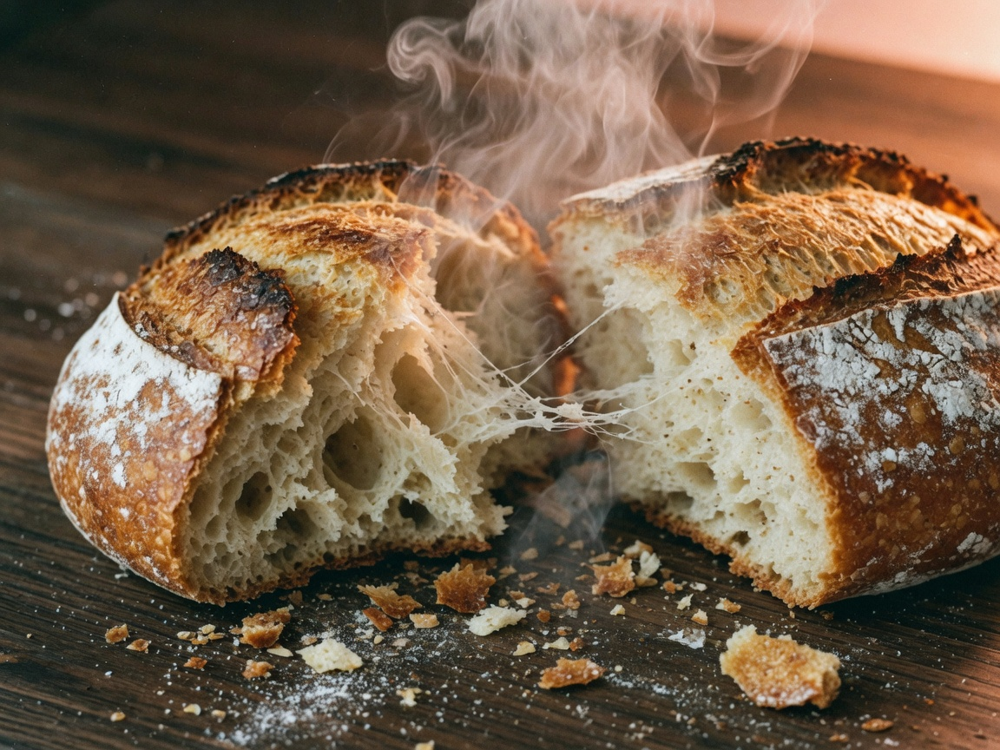
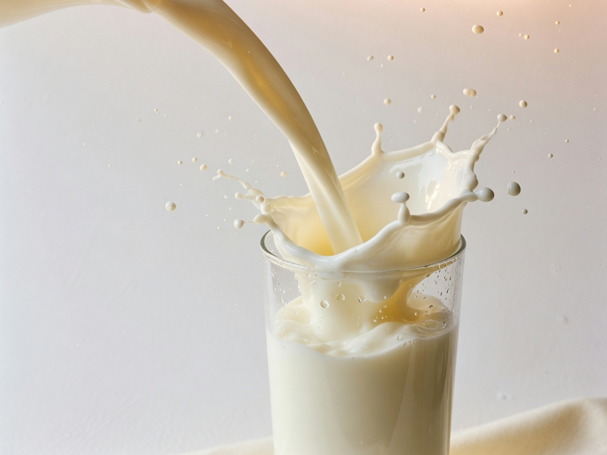
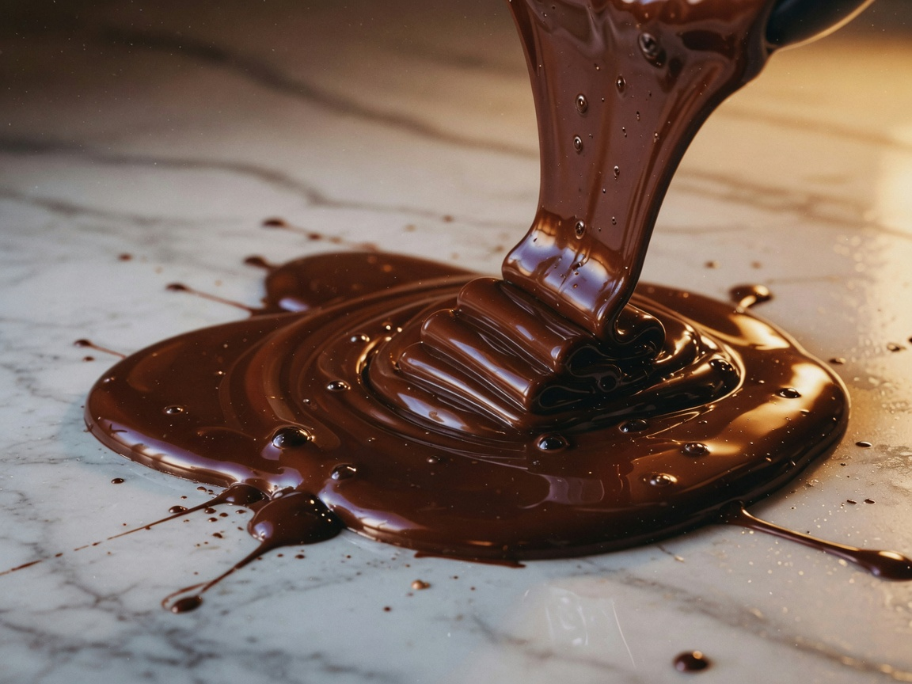
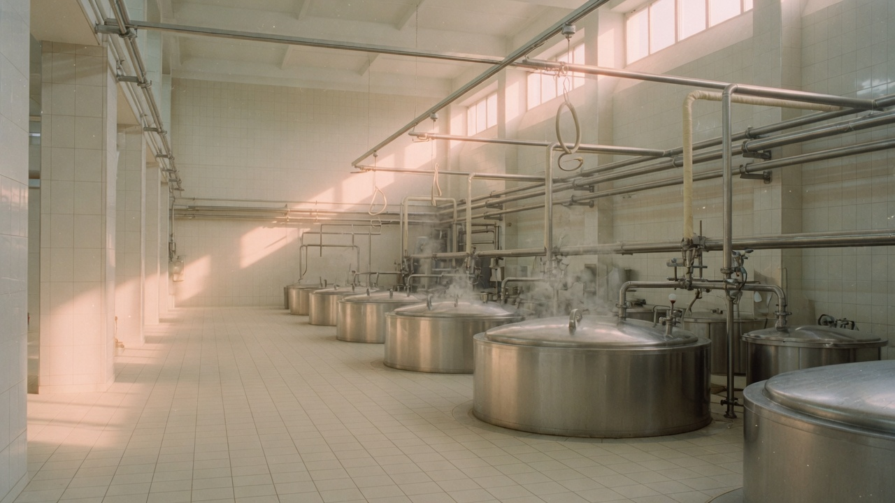

Рецептура
Считает граммы, температуры и культуры. Придумывает новые продукты — от безлактозного молока до растительного фарша.
Вкус · Наука · Ремесло

Школьная профориентация
Человек, который придумывает вкус и отвечает за то, чтобы еда была безопасной.

Каждый продукт
Йогурт, хлеб, шоколад, сыр — за каждым стоит технолог.
в магазине
когда-то
придумал человек.
01 · Профессия
Технолог пищевых производств разрабатывает рецептуры, запускает линии и следит, чтобы продукт получился таким, каким его задумали — вкусным, стабильным и безопасным.
Если хлеб осел, йогурт получился слишком кислым, а партия шоколада побелела — разбирается он. Это работа на стыке химии, биологии и ремесла. Результат можно попробовать.

02 · Будни
Считает граммы, температуры и культуры. Придумывает новые продукты — от безлактозного молока до растительного фарша.
Берёт пробы, смотрит цвет, вкус, запах, кислотность. Сверяет с ГОСТами и внутренними стандартами завода.
Следит за и . Его работа — чтобы партия не попала на стол, если с ней что-то не так.
Температура, время, давление, скорость. Производство должно идти как часы — от сырья до упаковки.
Фудтех: функциональное питание, альтернативы сахару, новые вкусы. Технолог — тот, кто переводит идею в продукт.
Технологические карты, спецификации, акты. Без бумаги продукт не выйдет в магазин — это тоже часть профессии.

03 · Один день
04 · География вкуса
Пищевая промышленность — одна из самых стабильных. Люди едят каждый день, в любом городе. Нажмите на фото, чтобы открыть отрасль.




05 · Характер
Не обязательно любить готовить дома. Важно любить разбирать, как устроено.
06 · Маршрут
После 9 класса
3 года 10 месяцев
Специальность «Технология продуктов питания». Квалификация — техник-технолог. Можно выйти на работу раньше сверстников из вуза.
После 11 класса
2 года 10 мес. · или 4 года
Колледж — быстрее к практике. Вуз (19.03.02, 19.03.03) — глубже химия, инженерия, путь к главному технологу и науке.
Дальше
с первого года
Младший технолог → технолог смены → старший → главный. Можно уйти в разработку новых продуктов — .
На крупных заводах часто ждут высшее образование. Колледж — сильный старт, вуз — потолок выше.
07 · Цифры
Первый год, помощник технолога, лаборатория.
Ориентир рынка по России, 2026 год.
Опыт от трёх–шести лет, крупные комбинаты.
Зарплата зависит от региона, отрасли и того, запускаешь ли ты новые продукты. В Москве и на больших брендах — выше.
08 · Смысл
Не отчёт в папке — продукт на полке. Можно прийти в магазин и увидеть свою работу.
Люди всегда будут есть. Заводы, пекарни и молочные комбинаты нужны в любом городе.
Растительное мясо, безлактозное, спортпит, персональное питание — фудтех растёт прямо сейчас.
Для тех, кому мало одной теории и мало одной кухни. Здесь есть и формула, и вкус.
09 · Спрашивают чаще всего
Нет. Повар готовит блюдо здесь и сейчас. Технолог придумывает, как сделать тонны одинакового продукта — безопасно, вкусно и по рецептуре. На заводе он ближе к инженеру, чем к кухне ресторана.
Да. Колледж, около 3 лет 10 месяцев, квалификация «техник-технолог». После 11 класса путь короче: колледж около 2 лет 10 месяцев или вуз 4 года.
Не обязательно. Важнее химия, аккуратность и интерес к тому, как еда устроена. Любить вкус — плюс, но это не кулинарный кружок.
Хлебозаводы, молочные комбинаты, кондитерские фабрики, мясопереработка, напитки, общепит, лаборатории качества и отделы новых продуктов.
Ни то ни другое. На производстве и в лабораториях работают и те и другие. Решают голова, вкус и ответственность, а не пол.
10 · Проверка
Пять коротких вопросов. Честно, без правильных ответов — только совпадение с профессией. На клавиатуре: 1 да, 2 нет.
До встречи на производстве
Её придумывают люди, которым интересны и формула, и вкус. Если после этой встречи остался вопрос — задай его. Технолог пищевых производств всегда где-то рядом: в хлебе, в молоке, в шоколаде.
Профориентация · Технолог пищевых производств